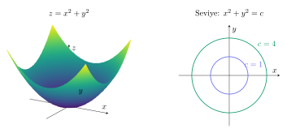

\(f:D\subseteq\mathbb R^2\to\mathbb R\) fonksiyonu her \((x,y)\) noktasına bir sayı atar. Grafik \(z=f(x,y)\) uzayda bir yüzeydir; tanım kümesi ise \(xy\) düzlemindedir. Örneğin \(A(a,h)=ah/2\) üçgen alanı iki değişkenlidir; \(V(x,y,h)=xyh\) kutu hacmi üç değişkenlidir. Üç değişkenli skaler fonksiyonun grafiği dört boyutlu olur; seviye yüzeyleriyle görselleştirilir.
Tanım kümesi \(D\), fonksiyonun gerçek değer almasını sağlayan bütün girdilerdir. Görüntü kümesi \(f(D)\) ise gerçekten ulaşılabilen çıktılardır. Bir ifadede birden fazla kısıt varsa hepsi aynı anda sağlanmalıdır.
Karekök içi en az 0 olmalı.
Logaritma içi kesinlikle pozitif olmalı.
Payda sıfır olamaz.
\(\arcsin u\) ve \(\arccos u\) için \(-1\le u\le1\).
\(f(x,y)=\sqrt{xy-x^4}+xy\) ve \(g(x,y)=\sqrt{x^2-y}+x^2+y^2+1\) tanım bölgelerini bulunuz.
Adım adım çözümü göster
İlkinde \(x(y-x^3)\ge0\). \(x>0\) iken \(y\ge x^3\), \(x<0\) iken \(y\le x^3\); \(x=0\) iken her y geçerlidir. Sonuç \(\{x>0,y\ge x^3\}\cup\{x<0,y\le x^3\}\cup\{x=0\}\).
İkincide \(y\le x^2\). Parabol ve altı dahildir. İlk soruda x ile bölmeden önce x işareti ayrılmazsa bölgenin yarısı kaybolur.
\(x^2+y^2+4\ge4>0\) her noktada doğrudur. Dolayısıyla tanım kümesi \(\mathbb R^2\).
Logaritma artan olduğundan görüntü kümesi \([\ln4,\infty)\).
4.3
Seviye eğrileri ve seviye yüzeyleri
\(f(x,y)=c\) denklemi aynı fonksiyon değerine sahip girdileri birleştirir. Haritadaki eş yükseklik eğrileri buna örnektir. Seviye eğrisi \(xy\) düzlemindedir; yüzey üzerinde \(z=c\) kesitinin düzleme izdüşümü olarak düşünülebilir. \(F(x,y,z)=c\) ise üç boyutlu uzayda bir seviye yüzeyidir.
\(f(x,y)=x^2+y^2\) için \(c=0,1,4\) seviyelerini bulunuz.
Adım adım çözümü göster
\(c=0\) için yalnızca orijin, \(c=1\) için yarıçapı 1 çember, \(c=4\) için yarıçapı 2 çember vardır.
\(c<0\) için seviye kümesi boştur. Yüzey \(z=x^2+y^2\) yukarı açılan paraboloiddir.

Aynı yüzey hem üç boyutlu grafik hem iki boyutlu seviye eğrileriyle okunabilir.
4.4
Komşuluk ve limitin tam anlamı
\((a,b)\) merkezli, yarıçapı \(\delta\) olan açık disk bir komşuluktur. Limit tanımında merkez nokta dışarıda bırakılır. Yaklaşım yalnızca tanım kümesindeki noktalardan yapılır. \((a,b)\), bu kümenin bir yığılma noktası olmalıdır.
Burada tek bir \(\delta\), izin verilen bütün yaklaşım yönlerini aynı anda kontrol etmelidir. Bu nedenle iki eksen üzerinde aynı sonucu bulmak limitin varlığını kanıtlamaz. Buna karşılık iki farklı yol üzerinde farklı sonuç bulmak limitin yokluğunu kanıtlamaya yeter.
4.5
Süreklilik ve doğrudan yerine koyma
Bir fonksiyon noktada tanımlıysa ve limiti değerine eşitse o noktada süreklidir. Polinomlar her yerde, rasyonel fonksiyonlar paydaları sıfır olmayan yerde süreklidir. Sürekli fonksiyonların uygun bileşkeleri de süreklidir. Bu kurallar uygunsa en kısa çözüm doğrudan yerine koymaktır.
\(\lim_{(x,y)\to(0,0)}\sin(xy)/x\) ve \(\lim_{(x,y)\to(0,0)}e^y\sin x/x\) hesaplayınız.
Adım adım çözümü göster
İlk ifade, uygun noktalarda \(y[\sin(xy)/(xy)]\) olur. Standart \(\sin u/u\to1\) limiti ve \(y\to0\) ile sonuç 0. Doğrudan \(|\sin(xy)/x|\le|y|\) sınırı da aynı sonucu verir.
İkincide \(e^y\to1\) ve \(\sin x/x\to1\); sonuç 1. Her iki limitte yaklaşım fonksiyonun tanımlı olduğu noktalar üzerindendir.
\((x-y)/(x+y)\), \(x/\sqrt{x^2+y^2}\) ve \((x^2+y^2)/y^2\) orijinde limite sahip midir?
Adım adım çözümü göster
İlkinde \(y=0\) yolu 1, \(x=0\) yolu -1 verir. İkinci ifadede pozitif x ekseni 1, negatif x ekseni -1 verir. İkisinin de limiti yoktur.
Üçüncüde y sıfır olamaz; \(y=x\) yolunda 2, \(y=2x\) yolunda \(5/4\) çıkar. Bu limit de yoktur. Tanımsız yolları test yolu olarak seçme.
4.8
Kutupsal koordinatlar ve sıkıştırma
Orijine yaklaşırken \(x=r\cos\theta,y=r\sin\theta\), \(r\to0^+\) dönüşümü yararlıdır. Ancak sabit bir açı seçmek yalnızca bir ışını test eder. Limitin varlığını göstermek için \(\theta\) ne olursa olsun sıfıra giden bir sınır bulunmalıdır. Örneğin \(|r\cos\theta\sin^2\theta|\le r\) eşitsizliği böyle bir sınırdır.